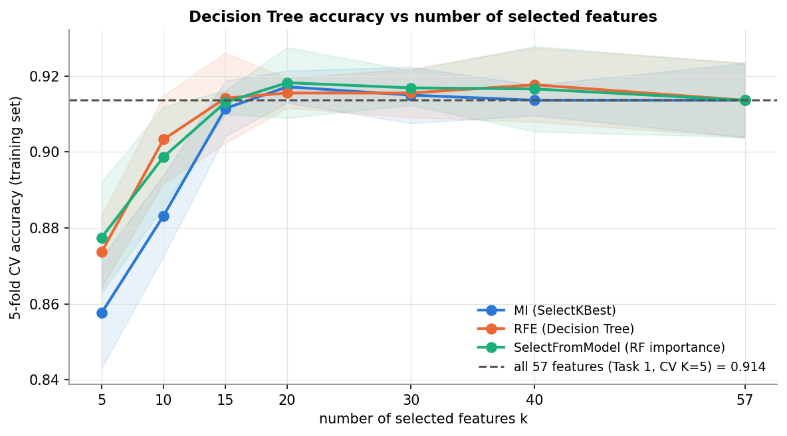
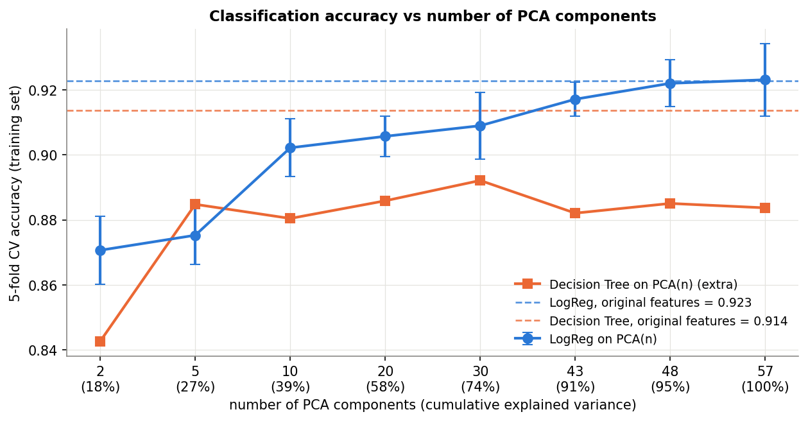
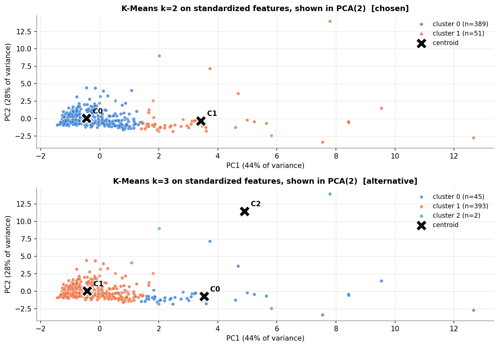
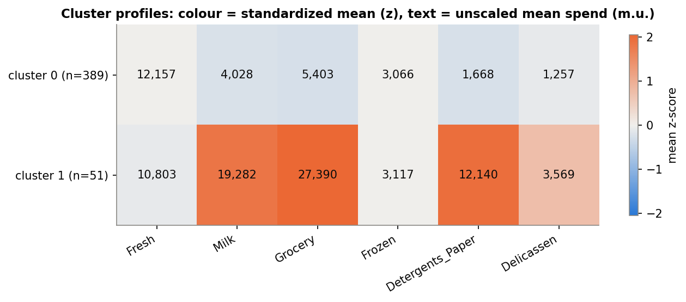
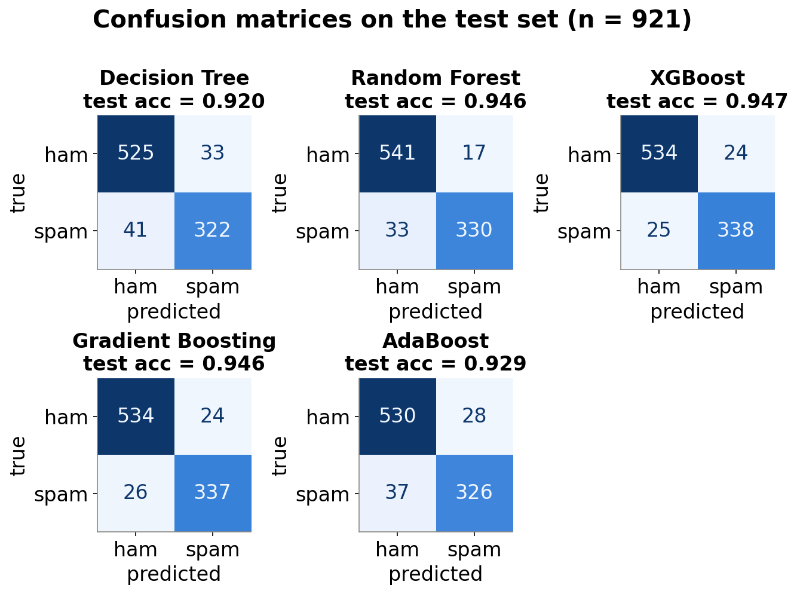
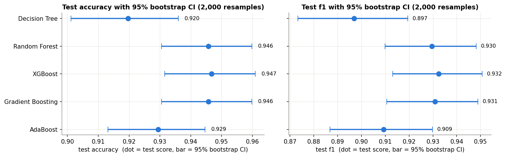
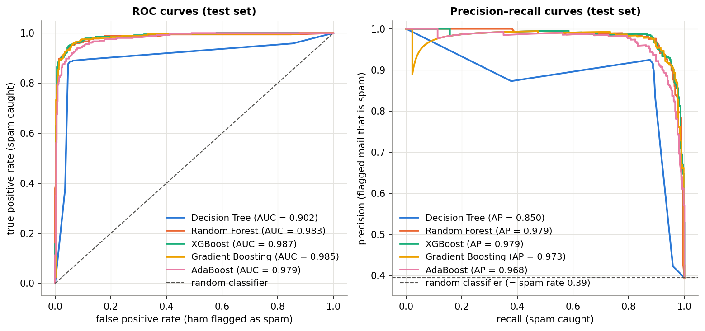
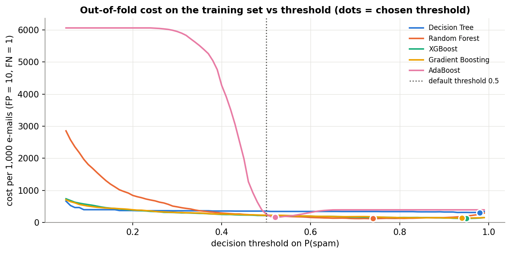
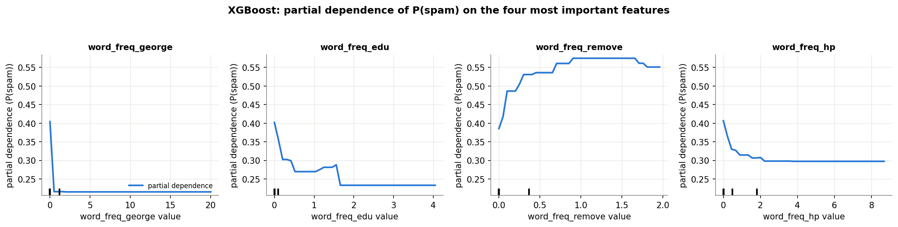
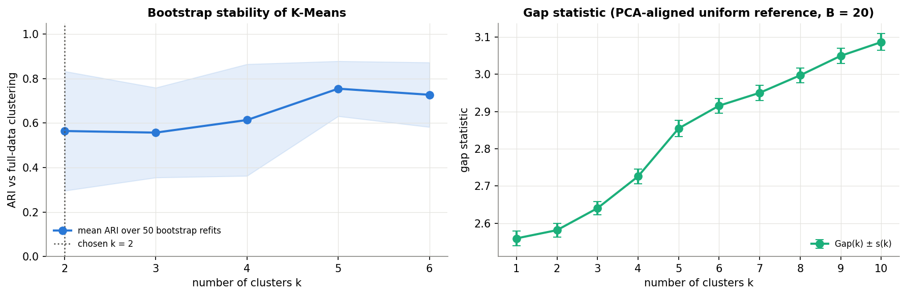

Fall 2026–2027
| Student | Student ID |
|---|---|
| Mohammed Bendardf | 229912053 |
| Abdalraouf Alkabir | 2309015482 |
Submission deadline: 20 November 2026, 17:00 (Istanbul, UTC+3)
Deliverables: notebook.ipynb (executed), report/report.pdf, figures/, tables/
Figure 0 — The project at a glance (figures/x5_overview.png; panels re-plot results of Tasks 1–5 and Appendix A.1). Panel 5 shows test accuracy with 95% paired-bootstrap confidence intervals (CIs); RF = Random Forest, GB = Gradient Boosting. Its title rests on McNemar's tests with Holm correction (tables/x1_mcnemar.csv): Random Forest, XGBoost and Gradient Boosting each beat the single tree significantly (Holm p 0.012–0.021), AdaBoost's lead over it is not significant (Holm p 1.0), and the three do not differ significantly from each other (Holm p 1.0).
This project studies five core machine-learning techniques on two public UCI datasets:
Tasks 1, 2, 3 and 5 are supervised binary classification on Spambase. Task 4 is unsupervised segmentation of the Wholesale Customers data. All work uses Python with scikit-learn 1.5.2, XGBoost 2.1.3, pandas, NumPy and Matplotlib. No AutoML or hosted service was used. The results in this report come from notebook.ipynb (its printed outputs, its figures and the CSVs in tables/); differences and ratios are computed from those values, and the timing and reproducibility comparisons (Sections 4 and 10) come from separate reruns of the notebook. Every figure is saved in figures/.
Spambase (UCI #94). 4,601 e-mails, 57 numeric features (48 word frequencies, 6 character frequencies, 3 statistics on runs of capital letters) and the label spam (1 = spam, 39.4%). There are no missing values. The data contain 391 exact duplicate rows (all 57 features and the label equal; every copy after the first is counted), which were not removed: 104 of the 921 test e-mails have an exact copy (all 57 features and the label equal) among the 3,680 training e-mails, so absolute test scores may be slightly optimistic. All models share the same split, so comparisons are paired; still, the copies may favour models that can memorise training rows (deep trees and tree ensembles) over AdaBoost's stumps, and the narrow XGBoost-vs-AdaBoost result (A.1) should be read with that in mind. The notebook prints both counts right after the train/test split. Six feature names contain symbols (char_freq_[, char_freq_$, …). XGBoost rejects the [ in char_freq_[, so all six symbol names were renamed (e.g. char_freq_dollar, char_freq_excl) by the notebook's loader load_spambase (see Section 9).
Wholesale Customers (UCI #292). 440 customers of a Portuguese wholesale distributor with annual spending (monetary units, m.u.) on six categories: Fresh, Milk, Grocery, Frozen, Detergents_Paper and Delicassen. Channel and Region were dropped before clustering. Channel is used only after clustering, as a post-hoc check.
Both datasets are committed in data/. If a file is missing, the notebook downloads it from the UCI repository (OpenML as a fallback), checks it against the SHA-256 hash of the committed CSV and saves it to data/.
One split. get_split (notebook setup cell) creates one stratified train/test split (test_size=0.2, random_state=42): 3,680 training and 921 test e-mails, with the spam rate preserved (39.4% in both; Table 1). The same split is used in Tasks 1, 2, 3 and 5.
| set | rows | spam rate |
|---|---|---|
| full | 4,601 | 0.3940 |
| train | 3,680 | 0.3940 |
| test | 921 | 0.3941 |
Table 1 — The single stratified split (tables/t0_split_summary.csv).
Selection only on training data. Every choice — K-fold settings, number of selected features k, number of PCA components, hyper-parameters, pruning strength α — is made with stratified K-fold CV on the training set (StratifiedKFold(5, shuffle=True, random_state=42) unless stated otherwise). No choice is ever made on the test set: it gives the final scores, and its other uses, such as the test curves in Figures 12 and 14 and the analyses in Appendix A, are for illustration and analysis only.
No leakage. StandardScaler, SelectKBest, RFE, SelectFromModel and PCA are always steps of an sklearn.pipeline.Pipeline. Inside GridSearchCV/cross_val_score they are therefore refit on every training fold, and for the final model they are fitted on the training set only, then applied to the test set. A grep of the notebook confirms that every .fit( / fit_transform( call on Spambase uses X_train (Section 10, Verification). Task 4 has no train/test split (unsupervised), so fitting the scaler and PCA on all 440 rows is legitimate.
Seeds and metrics. random_state=42 everywhere and np.random.seed(42). Classification metrics: accuracy, plus precision, recall and F1 for the spam class, because the classes are mildly imbalanced (the majority-class baseline is 60.6%). Figures are 150-dpi PNGs.
Baseline. A default DecisionTreeClassifier grows to depth 32 with 237 leaves. It scores 0.9997 on the training set but 0.9110 on the test set (Table 2). The 9-point gap shows strong over-fitting, so training accuracy is useless as an estimate.
| set | accuracy | precision | recall | F1 |
|---|---|---|---|---|
| train | 0.9997 | 1.0000 | 0.9993 | 0.9997 |
| test | 0.9110 | 0.8828 | 0.8926 | 0.8877 |
Table 2 — Decision Tree baseline (tables/t1_baseline.csv).
| K | mean acc | std acc | mean F1 | std F1 | time (s) | train rows/fold | std of CV mean (10 repeats) |
|---|---|---|---|---|---|---|---|
| 3 | 0.9054 | 0.0036 | 0.8804 | 0.0051 | 0.14 | 2,453 | 0.0045 |
| 5 | 0.9136 | 0.0109 | 0.8910 | 0.0134 | 0.29 | 2,944 | 0.0034 |
| 10 | 0.9117 | 0.0107 | 0.8884 | 0.0136 | 0.64 | 3,312 | 0.0021 |
Table 3 — Stratified K-fold CV on the training set (tables/t1_cv_comparison.csv; per-fold values in tables/t1_fold_scores.csv).

Figure 1 — Left: CV mean ± 1 std vs K, with the single-split test accuracy as a dashed line. Right: distribution of fold scores (figures/t1_cv_accuracy_vs_k.png).
Interpretation (Table 3, Figure 1).
Method. We applied three selectors, all followed by the Task 1 Decision Tree (its baseline is reused):
SelectKBest.RFE with a decision tree.SelectFromModel.Each selector is the first pipeline step, and k ∈ {5, 10, 15, 20, 30, 40, 57} is chosen by 5-fold CV.

Figure 2 — Mutual information and RF importance, top 20 features, both computed on the training set (figures/t2_feature_scores.png, tables/t2_feature_scores.csv).
Interpretation (Figure 2). The two rankings share all of their top-10 features: char_freq_$, char_freq_!, the three capital-run-length statistics, and your, free, remove, hp, money. Scores fall steeply. Beyond the 20th feature, MI is ≤ 0.059 and RF importance ≤ 1.1%. Word features are sparse (counted over all 4,601 e-mails and printed by the notebook right after the train/test split): 19 of the 48 are zero in at least 90% of the e-mails, the median zero share of the 48 is 86%, and 3d, table and parts are zero in 99%, 99% and 98% of them.
Selected features (tables/t2_selected_features.csv; each selector fitted on the full training set; "capital runs" = the three capital-run-length statistics; words in italics):
!, $, (, address, all, our, remove, internet, free, business, you, your, 000, money, hp, hpl, george.!, $, (, ;, #, make, all, 3d, our, over, remove, internet, mail, receive, will, report, free, business, email, you, credit, your, font, money, hp, hpl, george, 650, lab, data, technology, 1999, direct, meeting, original, re, edu.!, $, (, our, remove, internet, free, business, you, your, 000, money, hp, hpl, george, 1999, edu.!, $ and our, remove, free, you, your, money, hp, george; MI adds business, 000, RFE business, edu and RF importance 000, hpl.Overlap (tables/t2_overlap_cv_k.csv, tables/t2_overlap_k15.csv):
!, $, ( and free, remove, money, business, internet, our, you, your, hp, hpl, george. RFE's other 23 features are mostly weak, mostly-zero words and symbols (3d, font, meeting, ;, #, …).These are the classical spam markers plus strong ham markers: the corpus comes from HP Labs (hp, hpl), and george is the donor's first name.

Figure 3 — 5-fold CV accuracy vs k, with the all-feature baseline from Task 1 (figures/t2_accuracy_vs_k.png, tables/t2_cv_accuracy_vs_k.csv).
| method | CV-selected k | CV acc | test acc | precision | recall | F1 |
|---|---|---|---|---|---|---|
| all features (Task 1, reused) | 57 | 0.9136 | 0.9110 | 0.8828 | 0.8926 | 0.8877 |
| MI (SelectKBest) | 20 | 0.9171 | 0.9099 | 0.8933 | 0.8760 | 0.8846 |
| RFE (Decision Tree) | 40 | 0.9177 | 0.9164 | 0.8907 | 0.8981 | 0.8944 |
| SelectFromModel (RF importance) | 20 | 0.9182 | 0.9229 | 0.9056 | 0.8981 | 0.9018 |
Table 4 — Test results at the CV-selected k (tables/t2_test_results.csv).
Interpretation (Figure 3, Table 4).

Figure 4 — Explained variance per component and cumulative, with 90% and 95% thresholds; StandardScaler + PCA fitted on the training set only (figures/t3_explained_variance.png, tables/t3_cumulative_variance.csv).
Interpretation (Figure 4). Variance is spread very evenly:
The features are weakly correlated, so PCA cannot compress them much. The first components capture the few correlated groups (top-8 loadings in tables/t3_pca_loadings.csv):
Comparison. The same classifier, logistic regression (L2, C=1), is used in all three set-ups. It is linear like PCA and needs standardised inputs:
As an extra, the Task 1 Decision Tree is also run on (a) and (b).
| set-up | classifier | dims to classifier | CV acc | test acc | precision | recall | F1 |
|---|---|---|---|---|---|---|---|
| (a) original features | LogReg | 57 | 0.9228 | 0.9294 | 0.9209 | 0.8981 | 0.9093 |
| (b) PCA, CV-chosen n | LogReg | 57 | 0.9231 | 0.9294 | 0.9209 | 0.8981 | 0.9093 |
| (b') PCA, 95%-variance rule | LogReg | 48 | 0.9220 | 0.9273 | 0.9205 | 0.8926 | 0.9063 |
| (c) MI (k=40) → PCA (n=40) | LogReg | 40 | 0.9155 | 0.9262 | 0.9226 | 0.8871 | 0.9045 |
| extra (a) original | Decision Tree | 57 | 0.9136 | 0.9110 | 0.8828 | 0.8926 | 0.8877 |
| extra (b) PCA | Decision Tree | 30 | 0.8921 | 0.8817 | 0.8508 | 0.8485 | 0.8497 |
Table 5 — Original vs PCA vs selection→PCA (tables/t3_setup_comparison.csv; grid for (c) in tables/t3_fs_pca_grid.csv).

Figure 5 — CV accuracy vs number of components (cumulative variance in brackets) for LR and, as an extra, the Decision Tree (figures/t3_accuracy_vs_components.png, tables/t3_cv_accuracy_vs_components.csv).
Interpretation (Table 5, Figure 5).
| component block | variance share | CV accuracy (LR) |
|---|---|---|
| PC1–10 | 38.7% | 0.902 |
| PC11–20 | 19.0% | 0.619 |
| PC21–30 | 16.2% | 0.610 |
| PC31–57 | 26.1% | 0.629 |
Table 6 — LR trained on disjoint blocks of components (tables/t3_variance_vs_accuracy_blocks.csv).
Does high variance guarantee better classification? No (Table 6).
PCA is unsupervised: it ranks directions by spread, not by class separation. On Spambase it reduced 57 → 43–48 dimensions at a cost of 0.1–0.6 points (LR) or about 3 points (tree), and never improved accuracy. Supervised feature selection (Task 2) is the better reduction for this data.
| feature | mean | median | std | max | skew | skew after log1p |
|---|---|---|---|---|---|---|
| Fresh | 12,000 | 8,504 | 12,647 | 112,151 | 2.56 | −1.58 |
| Milk | 5,796 | 3,627 | 7,380 | 73,498 | 4.05 | −0.22 |
| Grocery | 7,951 | 4,756 | 9,503 | 92,780 | 3.59 | −0.67 |
| Frozen | 3,072 | 1,526 | 4,855 | 60,869 | 5.91 | −0.35 |
| Detergents_Paper | 2,881 | 817 | 4,768 | 40,827 | 3.63 | −0.24 |
| Delicassen | 1,525 | 966 | 2,820 | 47,943 | 11.15 | −1.09 |
Table 7 — Summary statistics (tables/t4_summary_statistics.csv).

Figure 6 — Raw (top) and log1p (bottom) spending distributions (figures/t4_distributions.png).

Figure 7 — Pearson correlations of the six spending features (figures/t4_correlation.png, tables/t4_correlation.csv).
Interpretation (Table 7, Figures 6–7).
Raw vs standardized vs log1p at k=3 (Table 7b):
| features | sizes | silhouette (own space) | silhouette (std 6-D) | ARI vs standardized |
|---|---|---|---|---|
| raw | 330/60/50 | 0.478 | 0.411 | 0.49 |
| standardized | 393/45/2 | 0.548 | 0.548 | 1.00 |
| log1p + standardized (extra) | 213/147/80 | 0.259 | 0.142 | 0.08 |
Table 7b — K-Means at k=3 on three feature representations; silhouette in each variant's own space and in the common standardized 6-D space (tables/t4_k3_raw_vs_scaled.csv).

Figure 8 — Elbow (inertia) and silhouette for k = 2…10, standardized features, n_init=10; log1p silhouette as an extra (figures/t4_elbow_silhouette.png).
| k | 2 | 3 | 4 | 5 | 6 | 7 | 8 | 9 | 10 |
|---|---|---|---|---|---|---|---|---|---|
| inertia | 1956 | 1608 | 1318 | 1059 | 916 | 825 | 737 | 661 | 606 |
| silhouette | 0.547 | 0.548 | 0.348 | 0.369 | 0.378 | 0.334 | 0.320 | 0.309 | 0.311 |
| smallest cluster | 51 | 2 | 5 | 1 | 1 | 1 | 1 | 1 | 1 |
Table 8 — K sweep (tables/t4_k_sweep.csv).
Choosing k (Figure 8, Table 8).
The evidence favours k = 2: silhouette cannot separate k=2 from k=3 (Δ = 0.001), k=3 adds a 2-customer cluster and otherwise only moves a few retail-tail customers to the dense cluster, and on data capped at the 99th percentile silhouette picks k=2 outright (0.463 vs 0.395 for k=3; Table 10b at the end of this section). As a disclosed tie-breaker we used an explicit rule: take the k with silhouette within 0.01 of the best whose smallest cluster holds at least 5% of customers. This selects k = 2 (clusters 389/51). We wrote this rule after a first draft had picked k=3 and we saw its 2-customer cluster, so it is post hoc and the 5% threshold is a judgement call; the capping check was also added after that draft, to test the rule (Section 9). Rejected alternatives:

Figure 9 — Clusters in PCA(2) space with centroids (✕); chosen k=2 (top) and alternative k=3 (bottom). K-Means numbers its clusters arbitrarily, so labels and colours differ between the panels: the dense cloud is cluster 0 (blue) at k=2 and cluster 1 (orange) at k=3, the retail tail is cluster 1 (orange) at k=2 and cluster 0 (blue) at k=3, and cluster 2 (green) holds the two outliers (figures/t4_pca_clusters.png).
Interpretation (Figure 9). PC1 (44% of variance) loads on Milk, Grocery and Detergents_Paper, and PC2 (28%) on Fresh, Frozen and Delicassen. With k=2, cluster 1 is the long tail of heavy retail-basket buyers along PC1, and cluster 0 is the dense cloud near the origin. The boundary cuts a continuous tail, which explains a silhouette of only about 0.55. With k=3 the two extreme points high on PC2 get their own centroid, which sits in empty space between them (one came from each k=2 cluster), and a few retail-tail customers move to the dense cluster (sizes: dense cloud 389 → 393, retail tail 51 → 45, plus the 2 outliers).
| features | dims | silhouette (own space) | silhouette (std 6-D) | sizes | min/max | ARI vs (a) |
|---|---|---|---|---|---|---|
| (a) original 6, standardized | 6 | 0.547 | 0.547 | 389/51 | 0.13 | 1.00 |
| (b) selected 5 (Grocery dropped) | 5 | 0.722 | 0.725 | 424/16 | 0.04 | 0.37 |
| (c) PCA, 2 components | 2 | 0.636 | 0.563 | 395/45 | 0.11 | 0.91 |
| (c) PCA, 3 components (≥80% var) | 3 | 0.578 | 0.547 | 389/51 | 0.13 | 1.00 |
| extra: log1p + standardized | 6 | 0.290 | 0.261 | 252/188 | 0.75 | 0.13 |
Table 9 — Clustering at k=2 in different feature spaces (tables/t4_feature_space_comparison.csv).
Interpretation (Table 9). Selection rule for (b), which uses only the correlations between the six spending features and no clustering result: while some |r| > 0.7, drop the member of the most-correlated pair with the larger mean |r|. This removed Grocery.
| cluster | n (share) | Fresh | Milk | Grocery | Frozen | Det._Paper | Delicassen | total | Horeca / Retail (post-hoc) |
|---|---|---|---|---|---|---|---|---|---|
| 0 | 389 (88%) | 12,157 | 4,028 | 5,403 | 3,066 | 1,668 | 1,257 | 27,579 | 293 / 96 |
| 1 | 51 (12%) | 10,803 | 19,282 | 27,390 | 3,117 | 12,140 | 3,569 | 76,301 | 5 / 46 |
Table 10 — Unscaled per-cluster mean spend (tables/t4_cluster_profiles.csv; medians in tables/t4_cluster_medians.csv; Channel crosstab in tables/t4_channel_crosstab_posthoc.csv — Channel was not used for fitting).

Figure 10 — Cluster profiles: colour = standardized mean, text = unscaled mean (figures/t4_cluster_profile_heatmap.png).
Interpretation (Table 10, Figure 10).
Difficulties and the effect of scaling and dimensionality reduction:
| version | customers capped | best silhouette (k) | silhouette k=3 | k chosen by the rule | sizes at k=2 | ARI vs chosen partition | Retail share of retail cluster |
|---|---|---|---|---|---|---|---|
| standardized (Table 8) | 0 | 0.548 (3) ≈ 0.547 (2) | 0.548 | 2 | 389/51 | 1.00 | 90% |
| capped at 99th pct., standardized | 19 | 0.463 (2) | 0.395 | 2 | 373/67 | 0.80 | 90% |
Table 10b — Robustness check: K-Means after capping each feature at its 99th percentile (tables/t4_capped_k_sweep.csv, tables/t4_capped_profiles.csv).
Interpretation (Table 10b). Capping the 19 most extreme customers removes the problem directly. k=2 then wins on silhouette alone (0.463 vs 0.395), with no tiny cluster, so the post-hoc size rule is no longer needed. The segmentation is the same one (ARI 0.80): the retail group grows from 51 to 67 customers and keeps its profile (about 5× Grocery, 7× Detergents_Paper, 90% Retail). The outliers explain the instability and the spurious k=3, not the main result.
Models and search. Decision Tree, Random Forest, XGBoost, Gradient Boosting and AdaBoost (SAMME, stumps), all tuned by GridSearchCV with 5-fold stratified CV on the training set (full grids in tables/t5_search_decision_tree.csv, tables/t5_search_random_forest.csv, tables/t5_search_xgboost.csv, tables/t5_search_gradient_boosting.csv and tables/t5_search_adaboost.csv).
| model | grid | best setting | CV acc (± std) | CV train acc |
|---|---|---|---|---|
| Decision Tree | max_depth ∈ {2, 3, 4, 5, 6, 8, 10, 12, 15, 20, None} | max_depth=12 | 0.9226 ± 0.008 | 0.976 |
| Random Forest | n_estimators ∈ {100,300,500} × max_depth ∈ {5,10,20,None} | 300 trees, no depth limit | 0.9527 ± 0.005 | 1.000 |
| XGBoost | n_estimators ∈ {100,300,500} × lr ∈ {0.01,0.05,0.1,0.3} × max_depth ∈ {3,5,7} | 300 trees, lr 0.1, depth 7 | 0.9576 ± 0.009 | 0.9995 |
| Gradient Boosting | n_est {100,300} × lr {0.05,0.1} × depth {3,5} | 300 trees, lr 0.1, depth 5 | 0.9549 ± 0.007 | 0.999 |
| AdaBoost | n_est {100,300,500} × lr {0.5,1.0} | 300 stumps, lr 1.0 | 0.9424 ± 0.005 | 0.953 |
Table 11 — Hyper-parameter search results (tables/t5_best_params.csv).
Interpretation (Table 11).
| rival (its grid size) | rival best CV | XGBoost best CV, same budget (median [5th pct.]) | XGBoost ahead |
|---|---|---|---|
| Random Forest (12) | 0.9527 | 0.9573 [0.9562] | 100% |
| Gradient Boosting (8) | 0.9549 | 0.9571 [0.9554] | 96% |
| AdaBoost (6) | 0.9424 | 0.9571 [0.9541] | 100% |
Table 11b — Equal-budget check: best CV score of 2,000 random subsets of XGBoost's 36-setting grid, each the size of the rival's grid; stored CV scores only, no refits (tables/t5_budget_matched.csv).
Interpretation (Table 11b). XGBoost had the largest grid (36 settings vs 12, 8 and 6), which could favour it. With the same number of settings as each rival it still leads in 96–100% of draws, so its CV lead is not an artefact of the larger grid.
| model | CV acc | test acc | precision | recall | F1 | FP | FN |
|---|---|---|---|---|---|---|---|
| Decision Tree (depth 12) | 0.9226 | 0.9197 | 0.9070 | 0.8871 | 0.8969 | 33 | 41 |
| Random Forest | 0.9527 | 0.9457 | 0.9510 | 0.9091 | 0.9296 | 17 | 33 |
| XGBoost | 0.9576 | 0.9468 | 0.9337 | 0.9311 | 0.9324 | 24 | 25 |
| Gradient Boosting | 0.9549 | 0.9457 | 0.9335 | 0.9284 | 0.9309 | 24 | 26 |
| AdaBoost | 0.9424 | 0.9294 | 0.9209 | 0.8981 | 0.9093 | 28 | 37 |
Table 12 — Test-set metrics of the CV-selected models (tables/t5_test_metrics.csv); FP/FN from the confusion matrices.

Figure 11 — Test-set confusion matrices of the five tuned models, 2 × 3 grid with the last panel empty; rows = true class, columns = predicted class (figures/t5_confusion_matrices.png).
Interpretation (Table 12, Figure 11).

Figure 12 — Complexity curves: Decision Tree train/test/CV accuracy vs max_depth (left); XGBoost CV train/validation accuracy vs max_depth, plus the test accuracy of one model per depth fitted on the full training set, an illustration only that is not used to choose max_depth (right) (figures/t5_complexity_curves.png, tables/t5_complexity_decision_tree.csv, tables/t5_complexity_xgboost.csv with the test_acc column).
Interpretation (Figure 12).
| model | variant | CV-chosen setting | CV acc | test acc | F1 |
|---|---|---|---|---|---|
| Random Forest | baseline | – | 0.9527 | 0.9457 | 0.9296 |
| Random Forest | (a) MI selection | k=40 | 0.9514 | 0.9446 | 0.9285 |
| Random Forest | (b) PCA | n=40 | 0.9323 | 0.9164 | 0.8923 |
| XGBoost | baseline | – | 0.9576 | 0.9468 | 0.9324 |
| XGBoost | (a) MI selection | k=40 | 0.9549 | 0.9479 | 0.9335 |
| XGBoost | (b) PCA | n=30 | 0.9383 | 0.9240 | 0.9033 |
Table 13 — Ensembles with feature selection and PCA inside pipelines (tables/t5_fs_pca_comparison.csv).

Figure 13 — Test accuracy, baseline vs feature selection vs PCA; the y-axis starts at about 0.886, not at zero, which magnifies the differences, and each bar is labelled with its value (figures/t5_fs_pca_comparison.png).
Interpretation (Table 13, Figure 13).
Why the models differ.

Figure 14 — Cost-complexity pruning: accuracy (left) and number of leaves (right) vs ccp_alpha (figures/t5_ccp_pruning.png, tables/t5_ccp_alpha.csv).
| tree | leaves | test acc | F1 |
|---|---|---|---|
| unpruned (Task 1 baseline, reused) | 237 | 0.9110 | 0.8877 |
| max_depth = 12 (from the search above, reused) | 120 | 0.9197 | 0.8969 |
| ccp_alpha = 0.00088 (CV-best) | 59 | 0.9164 | 0.8926 |
| ccp_alpha = 0.00112 (1-SE rule, extra) | 35 | 0.9088 | 0.8814 |
Table 14 — Pruning summary (tables/t5_pruning_summary.csv).
Pruning (Figure 14, Table 14). Without its last α (which prunes the tree to its root), the pruning path on the training data has 106 distinct α values. We evaluated 30 values: 30 evenly spaced quantiles of the path, the first being α = 0.
char_freq_[. Fix: the six symbol features are renamed in load_spambase.requirements.txt). Windows application control blocks jupyter-nbconvert.exe and virtual-environment launchers, so the notebook is run with python -m nbconvert on the uv-managed Python. The notebook ignores FutureWarnings, two known harmless library warnings (SciPy's Unknown solver options and a GridSearchCV masked-array cast warning) and the warnings of the OpenML download fallback (sklearn.datasets._openml), and joblib prints harmless clean-up KeyErrors.np.select (fix: a string default), and the k=2 clustering was less stable than hoped (Appendix A.4).Verification.
fit/fit_transform call on Spambase uses X_train or runs inside a Pipeline evaluated by CV; the test set is never passed to a fit call; besides predictions and scores it appears only in descriptive summaries (such as Table 1 and the duplicate count in Section 2) and in two Appendix A analyses that fit nothing (the error-analysis means of A.2 and the permutation importance of A.3). In Appendix A, thresholds are chosen on out-of-fold training predictions (A.2) and nested CV runs on the training set only (A.1).figures/ appear in the notebook and in this report with an interpretation, and every one of the 52 CSVs in tables/ is interpreted in the notebook and referenced in this report.$, !, capital runs, free/remove, plus the ham markers hp/george) are enough. At their CV-selected k the three selectors are not significantly different (CV 0.9171–0.9182, within one fold-std); univariate MI is clearly weaker only at k ≤ 10.These checks are not required by the tasks. They use the same split and the fitted Task 5 models, every choice is still made on training data, and the test set is used only to evaluate and explain.

Figure 15 — Test accuracy and F1 with 95% paired-bootstrap CIs, 2,000 resamples (figures/x1_bootstrap_ci.png, tables/x1_bootstrap_ci.csv).
| comparison | accuracy difference [95% CI] | McNemar (A right/B wrong vs A wrong/B right) | Holm p |
|---|---|---|---|
| XGBoost − Decision Tree | +0.027 [+0.011, +0.045] | 43 vs 18 | 0.017 |
| XGBoost − AdaBoost | +0.017 [+0.005, +0.029] | 24 vs 8 | 0.049 |
| XGBoost − Random Forest | +0.001 [−0.010, +0.011] | 12 vs 11 | 1.000 |
| XGBoost − Gradient Boosting | +0.001 [−0.008, +0.010] | 9 vs 8 | 1.000 |
Table 15 — Paired bootstrap differences and exact McNemar tests (tables/x1_bootstrap_accuracy_difference.csv, tables/x1_mcnemar.csv; all 10 pairs in the CSV).
| model | non-nested CV | nested CV (mean ± std) | optimism | test accuracy |
|---|---|---|---|---|
| Decision Tree | 0.9226 | 0.9215 ± 0.010 | +0.0011 | 0.9197 |
| Random Forest | 0.9527 | 0.9500 ± 0.006 | +0.0027 | 0.9457 |
| XGBoost | 0.9576 | 0.9524 ± 0.011 | +0.0052 | 0.9468 |
Table 16 — Nested 5×5 cross-validation on the training set (tables/x1_nested_cv.csv).
Interpretation (Figure 15, Tables 15–16).

Figure 16 — ROC and precision–recall curves on the test set (figures/x2_roc_pr_curves.png, tables/x2_auc.csv).
Interpretation (Figure 16). The ensembles rank e-mails almost perfectly (ROC AUC 0.979–0.987, average precision 0.968–0.979). The Decision Tree (AUC 0.902) outputs only a few distinct leaf probabilities, so its best precision at 90% recall or more is only 0.42. Figure 16 joins its few operating points with straight lines; points on those lines are not reachable by any threshold, so the tree's curve looks higher there than any threshold delivers.

Figure 17 — Out-of-fold training cost vs decision threshold (false positive = 10, false negative = 1); dots mark the chosen thresholds (figures/x2_cost_vs_threshold.png).
| model | threshold (chosen on training OOF) | test FP | test FN | cost per 1,000 e-mails | test accuracy |
|---|---|---|---|---|---|
| XGBoost | 0.50 (default) | 24 | 25 | 288 | 0.947 |
| XGBoost | 0.95 | 4 | 58 | 106 | 0.933 |
| Random Forest | 0.74 | 4 | 65 | 114 | 0.925 |
Table 17 — Cost-sensitive thresholds (tables/x2_cost_threshold.csv; all five models in the CSV).
Interpretation (Figure 17, Table 17). Losing a real e-mail is worse than seeing a spam, so a false positive is assumed to cost 10 false negatives. Choosing the threshold on out-of-fold training predictions cuts XGBoost's false alarms from 24 to 4 of 558 legitimate e-mails and its cost by 63%, although accuracy drops 1.4 points. Accuracy treats both errors as equal, so it is the wrong metric for this decision. The Decision Tree's default-threshold row in tables/x2_cost_threshold.csv has 34 false positives, one more than Table 12, because one legitimate test e-mail falls in a leaf with P(spam) exactly 0.5: predict() labels it ham, while the rule P(spam) ≥ 0.5 labels it spam.

Figure 18 — XGBoost test probabilities by true class, log scale (figures/x2_probability_histogram.png; feature profile of each confusion cell in tables/x2_error_analysis.csv).
Error analysis (Figure 18). Missed spam is "quiet": 11× fewer $, almost no remove and short capital runs (mean P(spam) 0.18). False alarms are ham that sounds like spam: 7× more ! and 8× more free than normal ham (mean P(spam) 0.80). Fixing them needs new information (headers, sender, full text), not a better model.

Figure 19 — XGBoost permutation importance on the test set, 10 repeats (figures/x3_permutation_importance.png, tables/x3_permutation_importance.csv).
Interpretation (Figure 19). Three of the four most important features are ham markers: george (−3.0 accuracy points when shuffled), edu (−2.1) and hp (−1.7); only remove (−2.1) is a spam marker. $ and ! flag most spam, and the borderline cases are decided by the mailbox owner's personal vocabulary. The classifier is partly personalised to one mailbox, a dataset-shift risk the test score (same mailbox) cannot reveal.

Figure 20 — Partial dependence of P(spam) on the four most important features (figures/x3_partial_dependence.png).
Interpretation (Figure 20). All four effects are non-linear, saturating and nearly monotone (one george drops the average P(spam) from 0.40 to 0.22; remove raises it to about 0.57). The exceptions are two small bumps: edu rises slightly just before its drop near frequency 1.6%, and remove falls back slightly at the top of its range. Trees represent such steps naturally; the linear model of Task 3 cannot, which is part of why it scores lower (0.929 vs 0.947).

Figure 21 — Learning curves, 5-fold CV on the training set (figures/x3_learning_curves.png, tables/x3_learning_curves.csv).
Interpretation (Figure 21). The single tree is still improving at full size (0.867 → 0.923), while XGBoost and RF flatten after about 2,000 e-mails. For the ensembles the limit is the 57-feature representation, not the amount of data.

Figure 22 — Bootstrap stability of K-Means (left) and the gap statistic (right), standardized Wholesale data (figures/x4_stability_and_gap.png, tables/x4_bootstrap_stability.csv, tables/x4_gap_statistic.csv).
Interpretation (Figure 22). These checks are less flattering, and we report them as they are.